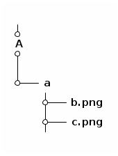

Hdf5 file for large image datasets
Introduction
A simple search on duckduckgo yields a number of tutorials on creating hdf5 files using python package h5py. The common approach involves the following steps:
- Read the image using PIL package. (you can use your favorite package instead of PIL)
- Convert it to numpy array.
- Store in hdf5 file using
create_datasetor you can do fancy things likegroupsandsubgroups.
import h5py import numpy as np import os from PIL import Image save_path = './numpy.hdf5' img_path = '1.jpeg' print('image size: %d bytes'%os.path.getsize(img_path)) hf = h5py.File(save_path, 'a') # open a hdf5 file img_np = np.array(Image.open(img_path)) dset = hf.create_dataset('default', data=img_np) # write the data to hdf5 file hf.close() # close the hdf5 file print('hdf5 file size: %d bytes'%os.path.getsize(save_path))
image size: 23986 bytes hdf5 file size: 434270 bytes
Although these steps are good for small datasets, the hdf5 file size increases rapidly with the number of images. I have experienced situations where the hdf5 file takes 100x times more space than the original dataset. This solely happens because the numpy array takes more storage space than the original image files. If the server has storage space limitations then probably you can follow the steps as given below.
Modified steps
- Read the image file as python binary file.
import h5py import numpy as np import os save_path = './test.hdf5' img_path = '1.jpeg' print('image size: %d bytes'%os.path.getsize(img_path)) hf = h5py.File(save_path, 'a') # open a hdf5 file with open(img_path, 'rb') as img_f: binary_data = img_f.read() # read the image as python binary binary_data_np = np.asarray(binary_data) dset = hf.create_dataset('default', data=binary_data_np) # write the data to hdf5 file hf.close() # close the hdf5 file print('hdf5 file size: %d bytes'%os.path.getsize(save_path))
image size: 23986 bytes hdf5 file size: 26034 bytes
- In order to read back the image as numpy array use the following snippet.
import h5py import numpy as np import io from PIL import Image hdf5_file = './test.hdf5' hf = h5py.File(hdf5_file, 'r') # open a hdf5 file key = list(hf.keys())[0] print("Keys: %s" % key) data = np.array(hf[key]) # write the data to hdf5 file img = Image.open(io.BytesIO(data)) print('image size:', img.size) hf.close() # close the hdf5 file img.show()
Keys: default image size: (502, 287)
- Now it is clear that the modified steps consume less storage space and also recovers the image as required.
A practical example
Consider the following file structure. I have many such As' in my dataset.

- I have to figure it out to store the images in to a hdf5 file but somehow need to retrieve the file structure. In this way I can load the images from hdf5 file with their paths.
- The following steps are mostly tailored to address my requirements, but these components can be customized to address other scenarios.
import h5py import numpy as np import os base_path = './' # dataset path save_path = './test.hdf5' # path to save the hdf5 file hf = h5py.File(save_path, 'a') # open the file in append mode for i in os.listdir(base_path): # read all the As' vid_name = os.path.join(base_path, i) grp = hf.create_group(vid_name) # create a hdf5 group. each group is one 'A' for j in os.listdir(vid_name): # read all as' inside A track = os.path.join(vid_name, j) subgrp = grp.create_group(j) # create a subgroup for the above created group. each small # a is one subgroup for k in os.listdir(track): # find all images inside a. img_path = os.path.join(track, k) with open(img_path, 'rb') as img_f: # open images as python binary binary_data = img_f.read() binary_data_np = np.asarray(binary_data) dset = subgrp.create_dataset(k, data=binary_data_np) # save it in the subgroup. each a-subgroup contains all the images. hf.close()
- The question is how to get the names of all the groups and subgroups from the hdf5 file? The h5py package has features like
visititemsto help us access back the image files. Lets see the following steps in continuation to the above steps:
data = [] # list all images files full path 'group/subgroup/b.png' for e.g. ./A/a/b.png. These are basically keys to access our image data. group = [] # list all groups and subgroups in hdf5 file def func(name, obj): # function to recursively store all the keys if isinstance(obj, h5py.Dataset): data1.append(name) elif isinstance(obj, h5py.Group): group1.append(name) hf = h5py.File(save_path, 'r') hf.visititems(func) # this is the operation we are talking about. # Now lets read the image files in their proper format to use it for our training. for j in data: kk = np.array(hf[j]) img = Image.open(io.BytesIO(kk)) # our image file print('image size:', img.size)
Some issues [Solved]
- In Pytorch I have noticed that parallel reading doesn't work (number of workers > 1 in dataloader).
However, the issue is simple to solve in the latest versions of h5py. I have not tried by myself but these links can help: SWMR. Combining Pytorch dataloader and h5py was bit problematic but found a fix for that. There may be better solution that I am not aware of. In usual pytorch dataloader, I open the hdf5 file in the__init__()function and then read from them in__getitem__(). However in the case of num of workers > 1 it fails. So the fix is to open the hdf5 file inside the__getitem__()instead of__init__(). It solves the problem and runs with multiple number of workers.